Nonlinear Modeling of a Magneto-Rheological Fluid Damper
This demo is a case study exploring nonlinear black box modeling of the dynamical behavior of a magneto-rheological fluid damper. We will illustrate how Nonlinear ARX and Hammerstein-Wiener models of the damper may be created using measurements of its velocity and the damping force.
The data used in this demo was provided by Dr. Akira Sano (Keio University, Japan) and Dr. Jiandong Wang (Peking University, China) who performed the experiments in a laboratory of Keio University. See the following reference for a more detailed description of the experimental system and some related studies.
J.Wang, A. Sano, T. Chen, and B. Huang. Identification of Hammerstein systems without explicit parameterization of nonlinearity. International Journal of Control, In press, 2008. DOI: 10.1080/00207170802382376.
Contents
- Experimental Setup
- Input-Output Data
- Data Preparation for Estimation and Validation
- Model Order Selection
- Preliminary Analysis - Creating Linear Models
- Creating Nonlinear ARX Models
- Estimating a Default Nonlinear ARX Model
- Trying Various Model Orders
- Specifying Number of Units for Sigmoid Network Estimator
- Choosing Regressor Subset for Nonlinearity Estimator
- Trying Various Nonlinearity Estimators
- Analyzing Estimated IDNLARX Models
- Creating Hammerstein-Wiener Models
- Estimating an IDNLHW Model of Same Order as the Linear OE Model
- Analyzing Estimated IDNLHW Model
- Trying Various Nonlinearity Estimators and Model Orders
- Conclusions
- Additional Information
Experimental Setup
Magneto-Rheological (MR) fluid dampers are semi-active control devices used for reducing vibrations of various dynamic structures. MR fluids, whose viscosities depend on the input voltage/current of the device, provide controllable damping forces.
To study the behavior of such devices, a MR damper was fixed at one end to the ground and connected at the other end to a shaker table generating vibrations. The voltage of the damper was set to 1.25 v. The damping force f(t) was measured at the sampling interval of 0.005 s. The displacement was sampled every 0.001 s, which was then used to estimate the velocity v(t) at the sampling period of 0.005 s.
Input-Output Data
A data set containing the input and output measurements was stored in a MAT file called mrdamper.mat. The input v(t) is the velocity [cm/s] of the damper, and the output f(t) is the damping force [N]. The MAT file contains 3499 samples of data corresponding to a sampling rate of 0.005 s. This data will be used for all the estimation and validation tasks carried out in this demo.
% Let us begin by loading and inspecting the data. load(fullfile(matlabroot, 'toolbox', 'ident', 'iddemos', 'data', 'mrdamper.mat')); who
Your variables are: F Ts V
Package loaded variables F (output force), V (input velocity) and Ts (sampling interval) into an IDDATA object.
z = iddata(F, V, Ts, 'Name', 'MR damper', ... 'InputName', 'v', 'OutputName', 'f',... 'InputUnit', 'cm/s', 'OutputUnit', 'N');
Data Preparation for Estimation and Validation
Split this data set z into two subsets, first 2000 samples to be used for estimation (ze), and the rest to be used for validation of results (zv).
ze = z(1:2000); % estimation data zv = z(2001:end); % validation data
Let us plot the two data sets together to visually verify their time ranges:
plot(ze, zv) legend('ze','zv')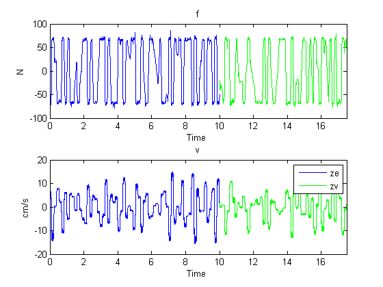
Model Order Selection
The first step in estimating black box models is to choose model orders. The definition of orders depends upon the type of model.
- For linear and nonlinear ARX models, the orders are represented by three numbers - na, nb and nk which define the number of past outputs, past inputs and input delays used for predicting the value of output at a given time. The set of time-delayed I/O variables defined by the orders are called "regressors".
- For Hammerstein-Wiener models, which represent linear models with static I/O nonlinearities, the orders define the number of poles and zeros and input delay of the linear component. They are defined by numbers nb (number of zeros +1), nf (number of poles), and nk (input delay in number of lags).
Typically model orders are chosen by trial and error. However, the orders of the linear ARX model may be computed automatically using functions such as ARXSTRUC and SELSTRUC. The orders thus obtained give a hint about the possible orders to use for the nonlinear models as well. So let us first try to determine the best order for a linear ARX model.
V = arxstruc(ze,zv,struc(1:5, 1:5,1:5)); % try values in the range 1:5 for na, nb, nk Order = selstruc(V,'aic') % selection of orders by Akaike's Information Criterion
Order =
2 4 1
The AIC criterion has selected Order = [na nb nk] = [2 4 1], meaning that in the selected ARX model structure, damper force f(t) is predicted by the 6 regressors f(t-1), f(t-2), v(t-1), v(t-2), v(t-3) and v(t-4).
For more information on model order selection, see the demo titled "Model Structure Selection: Determining Model Order and Input Delay" (iddemo4.m).
Preliminary Analysis - Creating Linear Models
It is advisable to try linear models first because they are simpler to create. If linear models do not provide satisfactory results, the results provide a basis for exploration of nonlinear models.
Let us estimate linear ARX and Output-Error (OE) models of orders suggested by output of SELSTRUC above.
LinMod1 = arx(ze, [2 4 1]); % ARX model Ay = Bu + e LinMod2 = oe(ze, [4 2 1]); % OE model y = B/F u + e
Similarly, we may create a linear state-space model whose order (= number of states) will be determined automatically:
LinMod3 = pem(ze); % creates a state-space model of order 3
Let us now compare the responses of these models to the measured output data in ze:
figure(1)
compare(ze, LinMod1, LinMod2, LinMod3) % comparison to estimation data
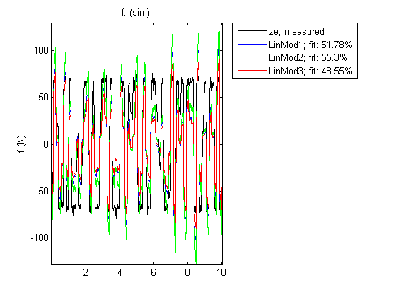 A better test for model quality is to validate it against an independent data set. Hence we compare the model responses against data set zv.
figure(2)
compare(zv, LinMod1, LinMod2, LinMod3) % comparison to validation data
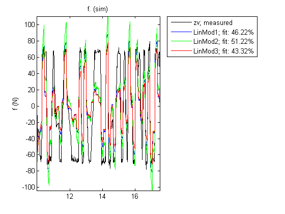 As observed, the best of these linear models has a fit of 51% on the validation data set.
Creating Nonlinear ARX Models
The linear model identification revealed that an ARX model provided less than 50% fit to the validation data. To achieve better results we now explore the use of Nonlinear ARX (IDNLARX) models. The need for nonlinear models for this data is also suggested by the ADVICE utility which may be used to inspect data for potential advantage of using a nonlinear model over a linear model.
advice(ze, 'nonlinearity')
There is an indication of nonlinearity in the data. A nonlinear ARX model of order [4 4 1] and treepartition nonlinearity estimator performs better prediction of output than the corresponding ARX model of the same order. Consider using nonlinear models, such as IDNLARX, or IDNLHW. You may also use the "isnlarx" command to test for nonlinearity with more options.
The Nonlinear ARX models can be considered as nonlinear counterparts of ARX models that provide greater modeling flexibility by two means:
- The regressors may be combined using a nonlinear function rather than a weighted sum employed by ARX models. Nonlinear functions such as sigmoid network, binary tree and wavelet network may be used. In the identification context, these functions are called "nonlinearity estimators".
- The regressors can themselves be arbitrary (possibly nonlinear) functions of I/O variables in addition to time-delayed variable values employed by ARX models. These are called "custom regressors", in contrast to the time-delayed I/O variables which are called "standard regressors".
In this demo, we will explore using various model orders (which define the standard regressors) and using various nonlinearity estimators. Use of custom regressors is not explored. For ways of specifying custom regressors in IDNLARX models, see the demo titled "Nonlinear ARX Models with Custom Regressors" (idnlbbdemo_customreg.m).
Estimating a Default Nonlinear ARX Model
To begin, let us estimate an IDNLARX model of order [2 4 1] and a sigmoid network as the type of nonlinearity. We shall use MaxIter = 50 and Levenberg–Marquardt search method as default algorithm options in this demo.
Options = {'MaxIter',50, 'SearchMethod', 'LM'};
Narx1 = nlarx(ze, [2 4 1], 'sigmoidnet',Options{:})
IDNLARX model with 1 output and 1 input Input name: v Output name: f Standard regressors corresponding to the orders na = 2, nb = 4, nk = 1 No custom regressor Nonlinear regressors: f(t-1) f(t-2) v(t-1) v(t-2) v(t-3) v(t-4) Nonlinearity estimator: sigmoidnet with 10 units Loss function: 6.4941 Sampling interval: 0.005 Estimated model (NLARX)
NLARX is the command used for estimating Nonlinear ARX models. Narx1 is a Nonlinear ARX model with regressors R := [f(t-1), f(t-2), v(t-1) ... v(t-4)]. The nonlinearity is a sigmoid network that uses a combination of sigmoid unit functions and a linear weighted sum of regressors to compute the output.
Examine the model quality by comparing the simulated output against the estimated and validated data sets ze and zv:
figure(1) compare(ze, Narx1); % comparison to estimation data figure(2) compare(zv, Narx1); % comparison to validation data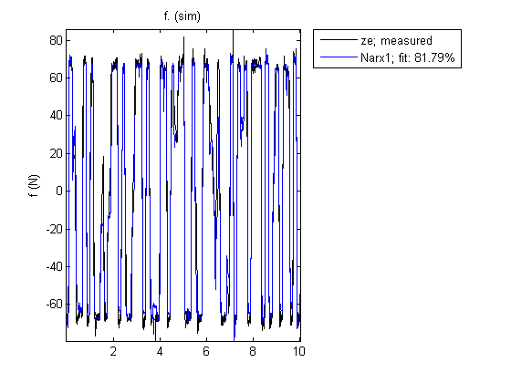

Trying Various Model Orders
We see a better fit as compared to the linear models of same orders. Next, we can try other orders in the vicinity of those suggested by SELSTRUC.
Narx2{1} = nlarx(ze, [3 4 1], 'sigmoidnet',Options{:}); % use na = 3, nb = 4, nk = 1.
Narx2{2} = nlarx(ze, [2 5 1], 'sigmoidnet',Options{:});
Narx2{3} = nlarx(ze, [3 5 1], 'sigmoidnet',Options{:});
Narx2{4} = nlarx(ze, [1 4 1], 'sigmoidnet',Options{:});
Narx2{5} = nlarx(ze, [2 3 1], 'sigmoidnet',Options{:});
Narx2{6} = nlarx(ze, [1 3 1], 'sigmoidnet',Options{:});
Evaluate the performance of these models on estimation and validation data sets:
figure(1)
compare(ze, Narx1, Narx2{:}); % comparison to estimation data
figure(2)
compare(zv, Narx1, Narx2{:}); % comparison to validation data
 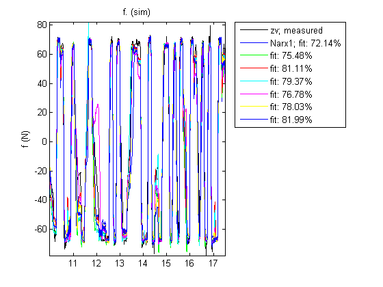
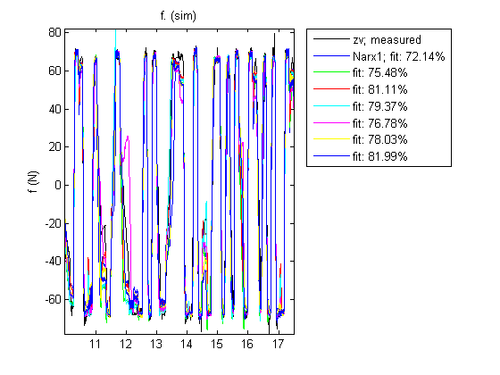 The model Narx2{6} seems to be providing good fits to both estimation and validation data sets while its orders are smaller than those of Narx1. Based on this observation, let us use [1 3 1] as orders for subsequent trials, and retain Nlarx2{6} for fit comparisons. This choice of orders corresponds to using [f(t-1), v(t-1), v(t-2), v(t-3)] as set of regressors.
Specifying Number of Units for Sigmoid Network Estimator
Next, let us explore the structure of the Sigmoid Network nonlinearity estimator. The most relevant property of this estimator is the number of sigmoid units it uses. To be able to specify the number of units, we specify the nonlinearity in the NLARX command (third input argument) using an object created by using its constructor - sigmoidnet. In object form, we can query and configure various properties of the estimator.
Sig = sigmoidnet('NumberOfUnits',12); % create a SIGMOIDNET object Narx3 = nlarx(ze, [1 3 1], Sig, Options{:});
We compare this models against Nlarx1 and Nlarx2{6}, using estimation and validation data sets:
figure(1)
compare(ze, Narx1, Narx2{6}, Narx3); % comparison to estimation data
figure(2)
compare(zv, Narx1, Narx2{6}, Narx3); % comparison to validation data
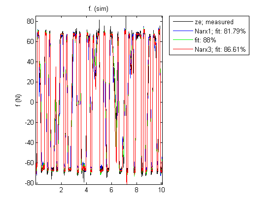 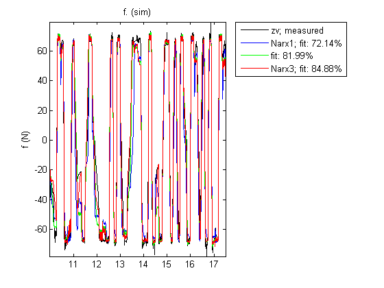 The new model Narx3 provides the best fit to the validation data while retaining a good fit to estimation data. Thus, increasing the number of units from its default value of 10 seems to be beneficial. We shall retain 12 as number of units to use in Sigmoid Network based models in subsequent trials.
Choosing Regressor Subset for Nonlinearity Estimator
Typically, all the regressors defines by chosen orders ([1 3 1] here) are used by the nonlinearity estimator (sigmoidnet). If the number of regressors is large, this may make increase the model complexity. It is possible to select a subset of regressors to be used by the sigmoid unit functions without modifying the model orders. This is facilitated by the property called 'NonlinearRegressors' that may be specified to the NLARX command as an input argument. For example, we may explore using only those regressors that are contributed by the input variables to be used by sigmoid functions. This will be achieved by:
Narx4 = nlarx(ze, [1 3 1], Sig, 'NonlinearRegressors', 'input', Options{:});
This causes the regressors v(t-1), v(t-2), and v(t-3) to be used by the sigmoid unit functions. The output variable based regressor f(t-1) is not used. Note that the sigmoidnet estimator also contains a linear term represented by a weighted sum of all regressors. The linear term uses the full set of regressors.
We can select the subset of regressors by their indices too, based on their order shown by the GETREG function. For example, we can select the regressors f(t-1), v(t-1), and v(t-2) in a model using orders = [2 3 1] by specifying [1 3 4] as the value of the NonlinearRegressors property.
getreg(Narx2{5}) % view the order of regressors in a model of order [2 3 1]
% Choose regressors no. 1, 3 and 4:
Narx5 = nlarx(ze, [2 3 1], Sig, 'NonlinearRegressors', [1 3 4], Options{:});
Regressors:
f(t-1)
f(t-2)
v(t-1)
v(t-2)
v(t-3)
The model Narx5 seems to perform very well for both estimation and validation data sets.
figure(1) compare(ze, Narx5); % comparison to estimation data figure(2) compare(zv, Narx5); % comparison to validation data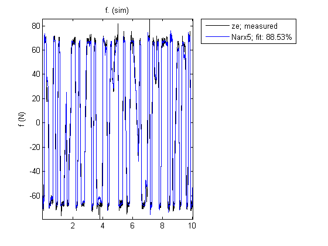 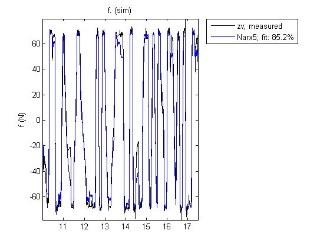
Trying Various Nonlinearity Estimators
So far we have explored various model orders, number of units to be used in the Sigmoid Network estimator and specification of a subset of regressors to be used by the nonlinear portion of the sigmoid network. Next, we try using other types of nonlinearity estimators. For using nonlinearity estimators with default properties, we may specify its name as a string to the estimation command. However, if we want to tweak the properties of the estimators (such as the number of units), the object form must be used (create the nonlinearity estimator object by calling its constructor and then setting its properties).
Use a Wavelet Network nonlinearity estimator with default properties:
Narx6 = nlarx(ze, [1 3 1], 'wavenet', 'nlr', [1 3]); % use 'wavenet' as name for Wavelet Network
In the above, 'nlr' is used as a shortcut for 'NonlinearRegressors'.
Use a Tree Partition nonlinearity estimator with 20 units:
TreeNet = treepartition; TreeNet.NumberOfUnits = 20; Narx7 = nlarx(ze, [1 3 1], TreeNet, 'nlr', [1 3]); % IDNLARX model using tree partition
Compare the results against Narx3 and Narx5
figure(1) compare(ze, Narx3, Narx5, Narx6, Narx7) % comparison to estimation data figure(2) compare(zv, Narx3, Narx5, Narx6, Narx7) % comparison to validation data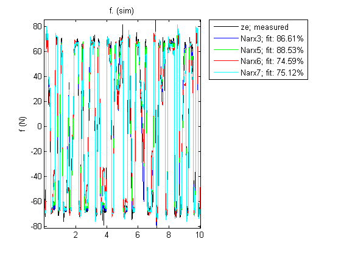 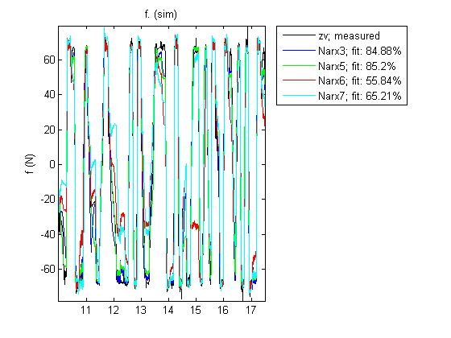
The models Narx6 and Narx7 seem to perform worse than Narx5, although we have not explored all the options associated with their estimation (such as choice of nonlinear regressors, number of units and other model orders).
Analyzing Estimated IDNLARX Models
Once a model has been identified and validated using the COMPARE command, we may tentatively select the one that provides the best results without adding too much extra complexity. The selected model may then be analyzed further using command such as PLOT and RESID.
To get some insight into the nature of the nonlinearities of the model, inspect cross-sections of the nonlinear function F() in the estimated model f(t) = F(f(t-1), f(t-2), v(t-1),...,v(t-4)). For example, in model Narx5, the function F() is a sigmoid network. To explore the shape of the output of this function as a function of the regressors, use the PLOT command on the model:
plot(Narx5)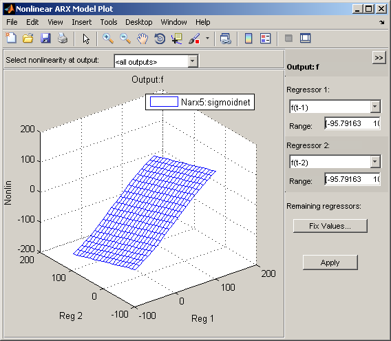
The plot window offers tools for selecting the cross-section regressors and their ranges. For more information, type "help idnlarx/plot" in MATLAB Command Window.
The residual test can be used to further inspect the model. This test reveals if the prediction errors are white and uncorrelated to the input data.
resid(zv, Narx5)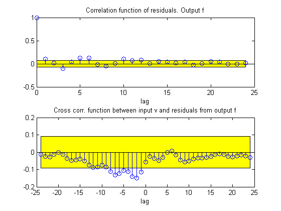
A failure of residual test may point to dynamics not captured by the model. For the model, Narx5, the residuals appear to be mostly within the 99% confidence bounds.
Creating Hammerstein-Wiener Models
The previously estimated nonlinear models are all of Nonlinear ARX (IDNLARX) type. Let us now try Hammerstein-Wiener (IDNLHW) models. These models represent a series connection of static nonlinear elements with a linear model. We may think of them as extensions of a linear output error (OE) models wherein we subject the input and output signals of the linear model to static nonlinearities such as saturation or dead zones.
Estimating an IDNLHW Model of Same Order as the Linear OE Model
The linear OE model LinMod2 was estimated using orders nb = 4, nf = 2 and nk = 1. Let us use the same orders for estimation of an IDNLHW model. We will use sigmoid network as nonlinearity estimators for both input and output nonlinearities. The estimation is facilitated by the NLHW command. It is analogous to the OE command used for linear OE model estimation. However, in addition to model orders, we must also specify the names of, or objects for, the I/O nonlinearities.
Nhw1 = nlhw(ze, [4 2 1], 'sigmoidnet', 'sigmoidnet')
IDNLHW model with 1 output and 1 input Input name: v Output name: f Linear transfer function corresponding to the orders nb = 4, nf = 2, nk = 1 Input nonlinearity estimator: sigmoidnet with 10 units Output nonlinearity estimator: sigmoidnet with 10 units Loss function: 89.1595 Sampling interval: 0.005 Estimated model (NLHW)
Compare the response of this model against estimation and validation data sets:
figure(1) compare(ze, Nhw1); % comparison to estimation data figure(2) compare(zv, Nhw1); % comparison to validation data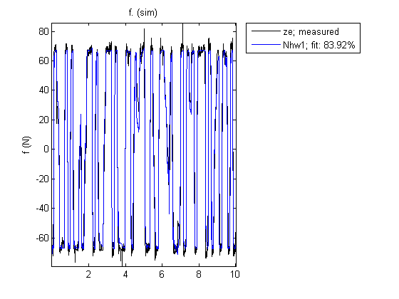 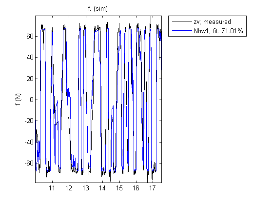
We observe about 70% fit to validation data using model Nhw1.
Analyzing Estimated IDNLHW Model
As for Nonlinear ARX models, the Hammerstein-Wiener models may be inspected for their nature of the I/O nonlinearities and the behavior of the linear component using the PLOT command. For more information, type "help idnlhw/plot" in MATLAB Command Window.
plot(Nhw1)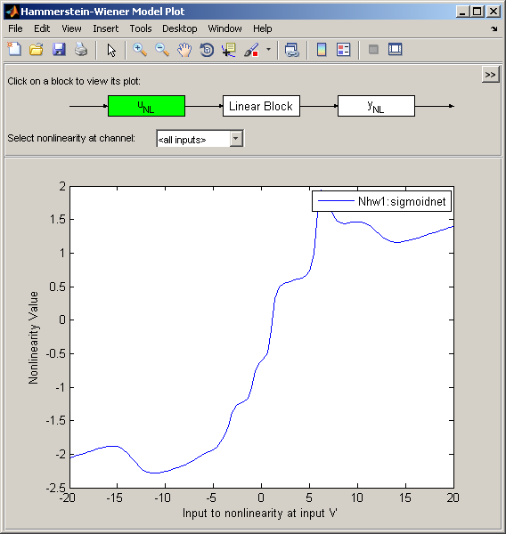
By default the input nonlinearity is plotted, showing that it may be simply a saturation function.
By clicking on the Y_NL icon, the output nonlinearity looks like a piecewise linear function.
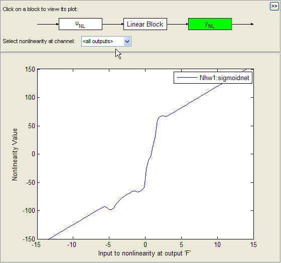
Click on the Linear Block icon and choose Pole-Zero Map in the pull-down menu, it is then observed that a zero and a pole are quite close to each other, indicating that they may be removed, thereby reducing the model orders.
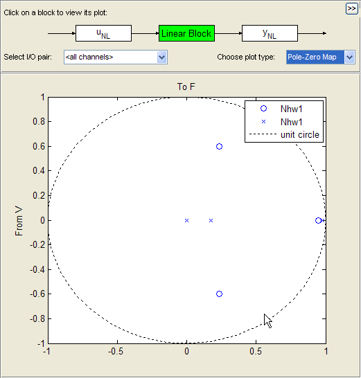
We will use this information to configure the structure of the model as shown next.
Trying Various Nonlinearity Estimators and Model Orders
Use saturation for input nonlinearity and sigmoid network for output nonlinearity, keeping the order of the linear component unchanged:
Nhw2 = nlhw(ze, [4 2 1], 'saturation', 'sigmoidnet');
Use piecewise-linear nonlinearity for output and sigmoid network for input:
Nhw3 = nlhw(ze, [4 2 1],'sigmoidnet', 'pwlinear');
Use a lower order linear model:
Nhw4 = nlhw(ze, [3 1 1],'sigmoidnet', 'pwlinear');
We may also choose to "remove" nonlinearity at the input, output or both. For example, in order to use only an input nonlinearity (such models are called Hammerstein models), we may specify [] as output nonlinearity:
Nhw5 = nlhw(ze, [3 1 1],'sigmoidnet', []);
Compare all models
figure(1) compare(ze, Nhw1, Nhw2, Nhw3, Nhw4, Nhw5) % comparison to estimation data figure(2) compare(zv, Nhw1, Nhw2, Nhw3, Nhw4, Nhw5) % comparison to validation data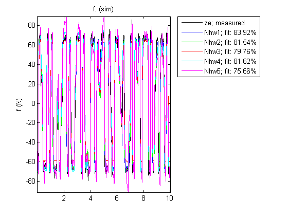 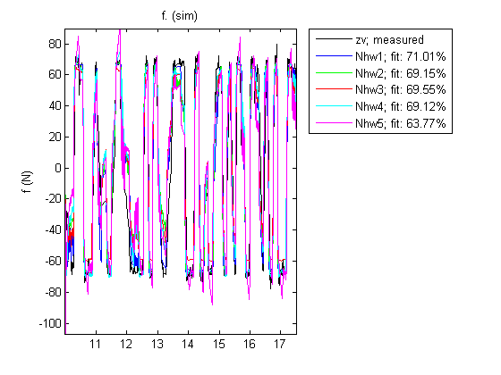
Nhw1 remains the best among all models, as shown by the comparison to validation data, but the other models, except Nhw5, have similar performance.
Conclusions
In this demo, we explored various nonlinear models for describing the relationship between the voltage input and the damping force output. It was seen that among the Nonlinear ARX models, Narx5 performed the best, while the model Nhw1 was the best among the Hammerstein-Wiener models. We also found that the Nonlinear ARX models provided the best option (best fits) for describing the dynamics of the MR damper.
compare(zv, LinMod2, Narx5, Nhw1)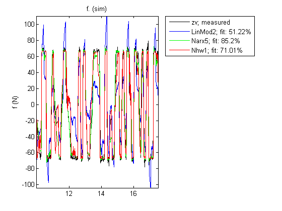
We found that there are multiple options available with each model type to fine-tune the quality of results. For Nonlinear ARX models, we can not only specify the model orders and the type of nonlinearity estimator, but also configure how the regressors are used and tweak the properties of the chosen estimator(s). For Hammerstein-Wiener models, we can choose the type of input and output nonlinearity estimators, as well as the order of the linear component. For both model types, we have many choices of nonlinearity estimators available at our disposal to try and use. In lack of a particular preference for model structure or knowledge of the underlying dynamics, it is recommended to try the various choices and analyze their effect of the quality of the resulting models.
Additional Information
For more information on identification of dynamic systems with System Identification Toolbox™ visit the System Identification Toolbox product information page.